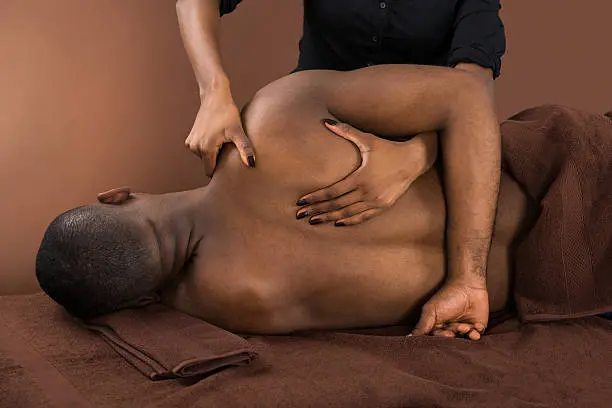

Cycle syncing has become a popular wellness idea: adjusting exercise, food, rest and recovery around the menstrual cycle. For massage therapy, the safest way to use this idea is not to claim that massage “balances hormones,” but to plan bodywork around how you actually feel at different points in your cycle.
At Lazizi® Wellness, we approach cycle-aware massage as comfort-focused care. Some Seattle and Bellevue clients want gentler relaxation during their period, deeper work when energy is higher, or stress-focused bodywork before PMS symptoms usually appear. The goal is to listen to the body, reduce tension and support recovery without making medical claims.

What Cycle Syncing Means for Massage
Cycle syncing usually means noticing how energy, mood, pain sensitivity, appetite and sleep change across the menstrual cycle. In massage therapy, this can guide pressure, positioning, session timing and treatment goals. For example, someone may prefer light Swedish massage during menstruation and deeper shoulder or hip work later in the cycle.
Because cycles are not always 28 days and symptoms vary, cycle-aware massage should be personalized. Tracking your symptoms for a few months can help identify patterns such as cramps, low back pain, fatigue, bloating, headaches or heightened stress.
Menstrual Phase: Gentle Comfort and Nervous System Support
During menstruation, many clients feel more sensitive, tired or crampy. A gentler session may be more appropriate than intense deep tissue work. Swedish massage, light abdominal avoidance if preferred, lower back comfort work, warm table support and calming pressure can help create a more restorative session.
If cramps are severe, suddenly worse, or interfere with daily life, massage should not be treated as a replacement for medical care. A qualified healthcare provider can assess causes of painful periods and recommend appropriate treatment. Massage may also need to be modified or postponed for clients with pregnancy-related concerns, unexplained pelvic pain, fever, infection, clotting concerns or recent surgery.
Follicular Phase: Mobility, Energy and Recovery Work
After menstruation, some clients notice better energy and less sensitivity. This can be a good time for more active recovery work, such as deeper neck, shoulder, hip or calf massage. For active Seattle clients who train, hike, cycle or lift, this phase may feel like a good window for bodywork that supports mobility.
The session can still be adjusted to the person, not the calendar. If stress, sleep loss or pain is present, the therapist should adapt pressure and focus areas accordingly.
Ovulation Window: Maintenance and Performance Support
Around ovulation, some people feel energetic, while others experience pelvic discomfort, bloating or headaches. A maintenance massage during this window can focus on posture, athletic recovery, shoulder tension or general relaxation. Clients who feel physically strong may tolerate deeper work, but pressure should still be based on comfort.
Luteal Phase: PMS, Stress and Tension Patterns
The luteal phase is when some people experience PMS symptoms such as irritability, breast tenderness, headaches, bloating, low mood, sleep disruption or cravings. A massage session during this time may focus on relaxation, jaw and neck tension, lower back tightness, and breathing support.
ACOG lists massage as one form of relaxation therapy that some people may try for PMS. This does not mean massage treats hormonal disorders, but it may be useful as part of a broader routine that includes movement, sleep, nutrition, stress management and medical care when needed.
How to Prepare for a Cycle-Aware Massage
- Track symptoms: note cramps, back pain, mood changes, sleep and energy for two to three cycles.
- Tell your therapist your comfort level: pressure, positioning and focus areas can be adjusted.
- Avoid over‑planning: your body may not feel the same every month.
- Ask for gentler pressure when needed: pain sensitivity can change across the cycle.
- Seek medical advice: severe pain, heavy bleeding, fainting, fever or sudden symptom changes should be evaluated.
For related treatment options, explore our Swedish and deep tissue massage services in Seattle and Bellevue. If you prefer care at home, review our mobile massage options for King County.
Plan massage around how your body feels
Book a cycle‑aware massage session in Seattle, Bellevue or King County. Mobile outcall appointments are available.
Book Your Session →Frequently Asked Questions
Can massage balance hormones?
No. Massage should not be described as balancing hormones. It may support relaxation, reduce muscle tension and help some clients feel more comfortable during stressful or symptomatic parts of the cycle.
Is massage safe during menstruation?
Massage is generally comfortable for many people during menstruation, but pressure, positioning and focus areas should be adjusted. Clients with severe pain, heavy bleeding or unusual symptoms should seek medical advice.
What type of massage is best for PMS?
Swedish massage or other relaxation-focused bodywork may be helpful for stress and tension. Deep tissue may be better at other times if the body feels less sensitive and needs firmer work.
Do you offer mobile massage for women’s wellness in Seattle?
Yes. Lazizi® Wellness offers mobile massage in selected Seattle and Bellevue areas, subject to availability and appointment details.